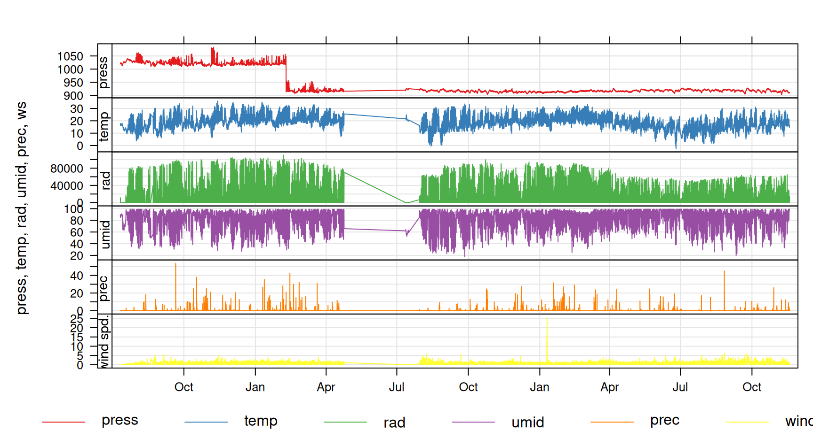
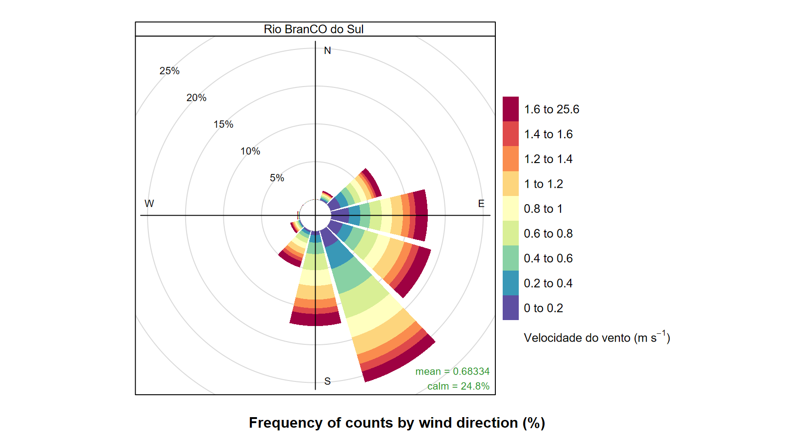
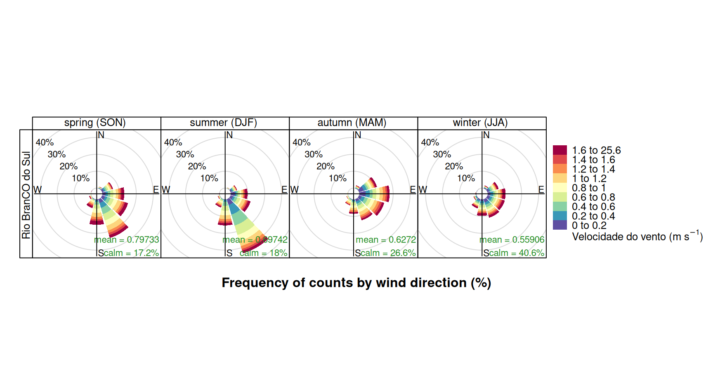
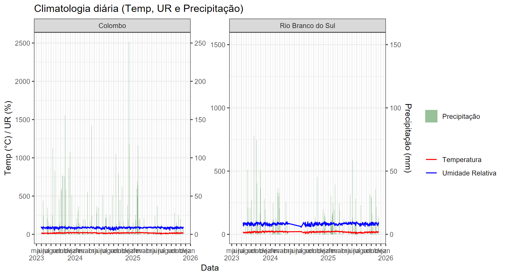

library(openair)
library(ggplot2)
library(scales)
library(tidyverse)
#source("scripts/load_cached_data.R")4 Caracterização Meteorológica
4.0.1 Séries horárias
if (exists("meteo_hour")) {
meteo_hour %>%
filter(Cidade %in% c("Rio Branco do Sul", "Almirante Tamandaré")) %>%
openair::timePlot(pollutant = c("press","temp","rad","umid","prec","ws"),
y.relation = "free")
}
4.0.2 Rosa de vento (velocidade como variável)
if (exists("meteo_hour")) {
meteo_hour %>%
filter(Cidade %in% c("Rio Branco do Sul","Almirante Tamandaré")) %>%
openair::pollutionRose(pollutant = "ws", type = "Cidade",
hemisphere = "southern",
key.footer = "Velocidade do vento (m/s)")
}
4.0.3 Sazonalidade (vento)
if (exists("meteo_hour")) {
meteo_hour %>%
filter(Cidade %in% c("Rio Branco do Sul","Almirante Tamandaré")) %>%
openair::cutData(hemisphere = "southern", type = "season") %>%
openair::pollutionRose(pollutant = "ws", type = c("season","Cidade"),
hemisphere = "southern",
key.footer = "Velocidade do vento (m/s)")
}
4.0.4 Climatologia diária simplificada
if (exists("meteo_hour")) {
meteo_day <- meteo_hour %>%
mutate(date = lubridate::floor_date(date,"day")) %>%
group_by(Cidade, date) %>%
summarise(temp = mean(temp, na.rm=TRUE),
umid = mean(umid, na.rm=TRUE),
prec = sum(prec, na.rm=TRUE),
.groups="drop")
ggplot(meteo_day, aes(x=date)) +
geom_col(aes(y=prec*10, fill="Precipitação"), alpha=0.4) +
geom_line(aes(y=temp, color="Temperatura"), linewidth=0.6) +
geom_line(aes(y=umid, color="Umidade Relativa"), linewidth=0.6) +
scale_y_continuous(sec.axis = sec_axis(~./10, name="Precipitação (mm)")) +
facet_wrap(.~Cidade, scales="free_y") +
scale_fill_manual(values="darkgreen") +
scale_color_manual(values=c("Temperatura"="red","Umidade Relativa"="blue")) +
theme_bw() +
labs(y="Temp (°C) / UR (%)", x="Data", fill="", color="", title="Climatologia diária (Temp, UR e Precipitação)") +
scale_x_date(labels = scales::label_date_short(), breaks="1 month")
}